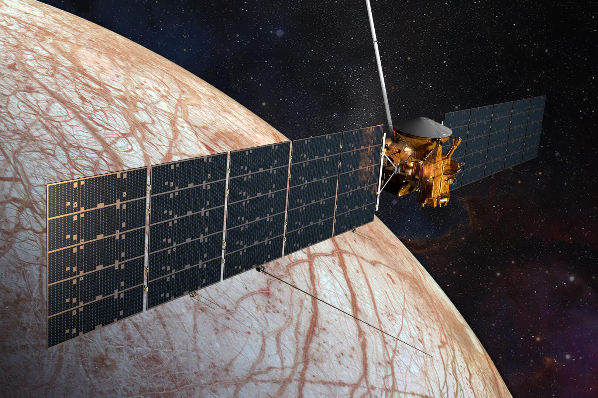
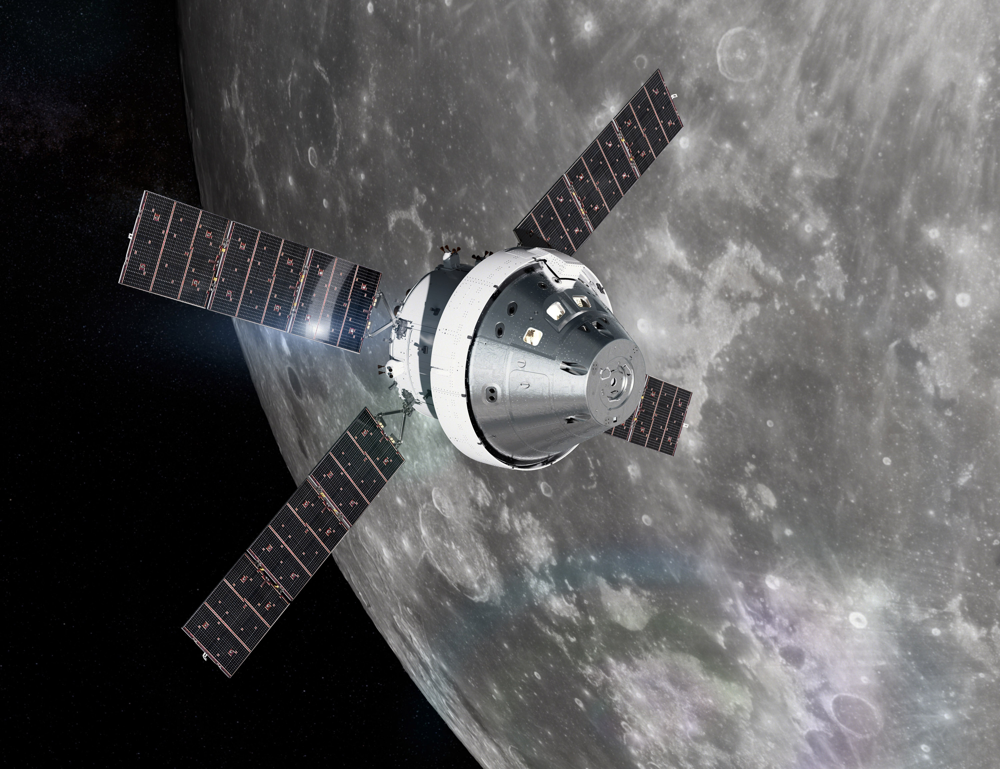
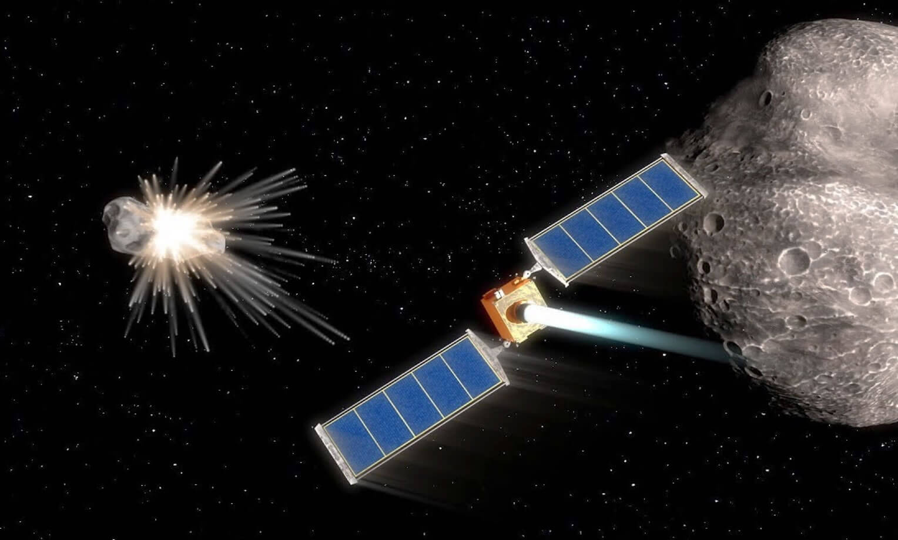
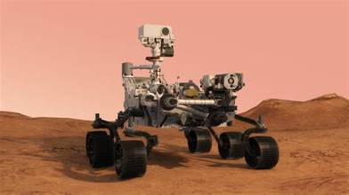
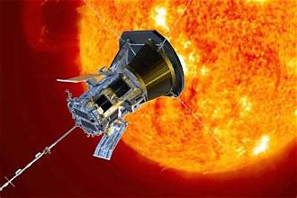
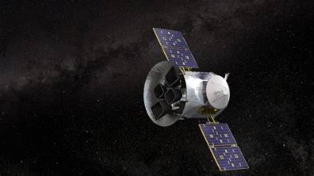
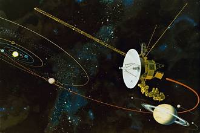

NASA Missions
Explore NASA's journey into space, from lunar exploration
to solar research and the discovery of distant worlds.
Explore Our Missions
Discover important NASA missions and their contributions
to space science and exploration.

14 October 2024
Europa Clipper
Planetary Exploration
NASA's mission to study Jupiter's icy moon Europa
and investigate whether it has conditions that
could support life.
Launch Vehicle
Falcon Heavy
Target
Europa
Mission Type
Orbiter / Flyby
Status
En Route
Explore Mission →

16 November 2022
Artemis I
Lunar Mission
An uncrewed test flight that sent the Orion
spacecraft around the Moon to test systems
for future human lunar exploration.
Launch Vehicle
SLS
Target
Moon
Mission Type
Lunar Test Flight
Status
Mission Completed
Explore Mission →

24 November 2021
DART Mission
Planetary Defense
NASA's spacecraft collided with an asteroid
moonlet to test whether a spacecraft can change
the motion of a potentially hazardous asteroid.
Launch Vehicle
Falcon 9
Target
Dimorphos
Mission Type
Impact Test
Status
Mission Completed
Explore Mission →

30 July 2020
Perseverance Rover
Mars Mission
The rover explores Mars, studies ancient
environments, searches for signs of past
microbial life, and collects rock samples.
Launch Vehicle
Atlas V 541
Target
Mars
Mission Type
Rover
Status
Active
Explore Mission →

12 August 2018
Parker Solar Probe
Solar Mission
The probe travels close to the Sun to study
its outer atmosphere, solar wind, and the
processes that drive solar activity.
Launch Vehicle
Delta IV Heavy
Target
Sun
Mission Type
Solar Probe
Status
Active
Explore Mission →

18 April 2018
TESS
Exoplanet Research
The Transiting Exoplanet Survey Satellite
searches for planets outside our Solar System
by measuring changes in the brightness of stars.
Launch Vehicle
Falcon 9
Target
Nearby Stars
Mission Type
Space Telescope
Status
Active
Explore Mission →

5 September 1977
Voyager 1
Deep Space Mission
Voyager 1 explored Jupiter and Saturn before
entering interstellar space, where it continues
to send scientific data toward Earth.
Launch Vehicle
Titan IIIE-Centaur
Target
Interstellar Space
Mission Type
Deep Space Probe
Status
Extended Mission
Explore Mission →